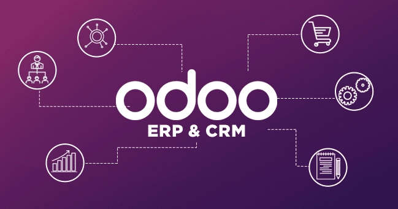

Migration de données Odoo
Outil Python de synchronisation BatAppli → Odoo ERP via API XML-RPC — Stage professionnel chez Exaltech

Contexte métier
Pluvitec est une entreprise du secteur de la construction (étanchéité, toiture). Ses données produits sont gérées dans deux systèmes distincts qui ne communiquent pas nativement :
BatAppli
Logiciel métier — catalogue d'articles et d'ouvrages (prix, unités, compositions)
Odoo ERP
ERP central — produits, nomenclatures BoM, fournisseurs et prix de vente/coût
Synchronisation
Génération de fichiers Excel d'import compatibles avec le module natif Odoo
L'objectif est de synchroniser les données BatAppli vers Odoo en croisant
quatre sources Excel via la clé IdBatAppli, puis en générant des fichiers
d'importation standardisés prêts à charger dans Odoo.
Architecture
Le projet suit une architecture orientée commandes (Action Pattern).
Chaque commande est un module Python découvert dynamiquement au démarrage
via pkgutil.iter_modules — aucune modification de main.py
n'est nécessaire pour ajouter une nouvelle commande.
- Point d'entrée unique
main.pyavec chargement dynamique des modulesactions/ - Chaque action déclare
register()(CLI) etrun()(logique métier) - Logging dual synchrone : console + fichier
logs/Log_Generation_BoM.log - Configuration via
.env— aucun secret en dur dans le code
Commandes CLI disponibles
Toutes les commandes s'exécutent via python main.py <commande>.
Chaque commande produit un fichier Excel d'import dans Output/.
Génère le fichier d'import des nomenclatures Odoo en croisant ouvrages, articles et mapping via IdBatAppli.
Importe les seller_ids Odoo depuis les données BatAppli (référence DALALU, prix, quantités min).
Aligne le standard_price Odoo sur le prix fournisseur actuel. N'exporte que les lignes divergentes.
Aligne le list_price sur le coût pour les articles dont le prix de vente dépasse le coût.
Compare le coût recalculé des BoM (∑ composants × prix) au list_price actuel dans Odoo.
Rapport multi-feuilles : produits + indicateurs BoM, coûts comparés, détail ligne par ligne des composants.
Détecte les noms de produits Odoo en doublon (> 2 occurrences) — résultats dans les logs.
Template prêt à copier pour ajouter une nouvelle commande. Découverte automatique sans modifier main.py.
Intégration API Odoo XML-RPC
Le client OdooAPI s'authentifie automatiquement à l'instanciation
via le endpoint standard Odoo /xmlrpc/2/common et expose une interface
générique pour interroger n'importe quel modèle Odoo.
- Authentification
authenticate()→ stockage de l'uidet du proxymodels - Méthode générique
_execute(model, method, *args)— appelexecute_kw search_read()— recherche + lecture en une requêteexport_odoo_products()— export completproduct.templateavec 30+ champs (prix, fournisseurs, variantes…)get_boms_with_costs()— récupère les BoMmrp.bomet leurs composantsmrp.bom.line- Sauvegarde automatique en JSON :
OdooApiProducts.json,OdooApiResult.json
Modèles Odoo interrogés :
product.template— gabarit de produitmrp.bom— nomenclature (Bill of Materials)mrp.bom.line— ligne de nomenclature (composant)
# Configuration .env
ODOO_URL=https://instance.odoo.com
ODOO_DB=nom_base
ODOO_USER=email@domaine.com
ODOO_API=cle_api_securisee
# Flux XML-RPC
POST /xmlrpc/2/common
→ authenticate() → uid
POST /xmlrpc/2/object
→ execute_kw()
Flux de données
La clé de jointure IdBatAppli est le pivot central reliant
les identifiants internes Odoo (product.template.id) aux données
BatAppli (articles, ouvrages, prix).
Articles.py
Charge la feuille BatAppli. Retourne dict[IdBatAppli → dict] avec prix, unités et références fournisseur.
Ouvrages.py
Parse les ouvrages composites (identifiés par TVA 20%). Regroupe les articles-composants dans Articles_liste[].
Mapping.py
Table de correspondance id_odoo ↔ IdBatAppli. Clé de voûte de la jointure entre les deux systèmes.
product_service.py
Calcule le coût d'un ouvrage : ∑(prix × quantité). Convertit unités BatAppli → Odoo (H→h, ML→m, M²→m²).
logger.py
Logging dual synchrone (console + fichier). Flush immédiat après chaque message pour visibilité temps réel.
utils.py
Export Excel multi-feuilles avec freeze panes, auto-filter et ajustement automatique des colonnes (min 8, max 50).
Technologies utilisées
| Composant | Technologie | Version |
|---|---|---|
| Langage | Python | 3.x |
| Manipulation Excel | pandas | 3.0.0 |
| Écriture Excel avancée | openpyxl | 3.1.5 |
| Variables d'environnement | python-dotenv | 1.2.1 |
| API ERP | Odoo XML-RPC (xmlrpc.client) | stdlib |
| Interface CLI | argparse | stdlib |
| Logging | logging (synchrone) | stdlib |
| Sérialisation | json | stdlib |
| Formateur de code | black | 26.1.0 |
| ERP cible | Odoo | 17+ |
Compétences mobilisées
- Analyser un contexte métier réel et concevoir une solution technique adaptée
- Développer un outil Python en ligne de commande avec architecture extensible (Action Pattern)
- Intégrer une API ERP tierce via XML-RPC (authentification, recherche, export)
- Manipuler et croiser des données multi-sources avec pandas
- Générer des fichiers Excel structurés et formatés avec openpyxl
- Mettre en place un système de logging synchrone dual (console + fichier)
- Appliquer les bonnes pratiques Python : séparation des responsabilités,
.env, black - Travailler en contexte professionnel sur un projet à impact métier direct